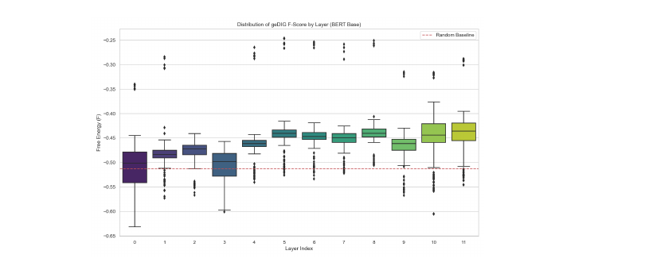

動的知識グラフの探索・統合を制御する統一ゲージの提案
— Gauge what Knowledge Graph needs. —
1動機: 動的 KG の評価関数を定義する
動機 ― 動的に成長する知識グラフを前提とした時、新規エピソード注入によってグラフが改善したか悪化したかを判定する関数が存在しない。GraphRAG・Self-RAG は「何を (What)」検索するかに焦点を当てるが、「いつ (When)」統合するかの判定はヒューリスティックに依存している。
アプローチ ― 本研究では、新規エピソード注入時の変化を 構造変更コスト (ΔEPC) − 情報利得 (ΔH + γ·ΔSP) として統一評価関数 F に定式化する。F が減少するなら統合は有益、増加なら棄却するという原理的判定が可能になる。
実証 ― この F を用いて空間的 KG (部分観測迷路探索) と意味的 KG (Transformer) の両方で検証し、単一スカラーによる動的 KG 制御が成立することを示した。ノード単位を従来のトークン/チャンクではなく エピソード とすることで、認知地図・エピソード記憶との計算論的対応も実現する。
2統一評価関数 F と FEP/MDL 対応
迷路:新通路 / TF:閾値超Attn変化
迷路:行動多様性 / TF:Attn拡散
迷路:物理近道 / TF:CLS集約
3Figure 1: ΔSP分岐の2ケース
候補エッジを AG エリア内に張った時、multi-hop 先で閉ループが形成されるか否かで F 収支が分岐する。
同じ ΔEPC でも ΔSP_rel が異なれば統合判定は分岐する。AG内に張る候補エッジが multi-hop 領域でループを閉じるか否かが鍵。
4AG/DG: 局所から大域への段階的判定
制約 ― F を毎ステップ全グラフ上で評価すると、グラフ成長に伴い計算量が飽和する。実用的な動的 KG 制御には、評価範囲を限定する戦略が不可欠である。
戦略 ― 本研究では、新規エピソードを中心とした局所構造で先に評価し、局所で判定不能の場合に限り接続エッジで系を拡張して再評価 する段階的アプローチを採る。大多数の更新は局所で決着するため、計算量を劇的に削減できる。
実装 ― F を用いてエージェントは2つのゲートを段階的に起動する。AG (0-hop 評価) で局所的違和感がなければ、そのまま統合を確定(大多数の更新がここで決着)。局所で違和感を検知した場合のみ DG (multi-hop 評価) で大域的近道 (shortcut) を探索し、近道を発見した候補のみ統合を確定する。結果として「わからないときだけ調べ、必要なときだけ拡張する」自律的振る舞いが得られる。
5ノード粒度: エピソード単位の意義
GraphRAG (チャンク) / Self-RAG (文・段落) が静的なノードを前提とするのに対し、geDIG は 経験の単位 = エピソード を動的に成長させる。この粒度により、迷路の訪問位置と Transformer の Attention 集約を 同じ構造 として扱え、認知地図・エピソード記憶の計算論的定義に対応する。
6検証I: 空間的KG ― 部分観測迷路探索
- 迷路:
- DFS 生成 15×15 / 25×25, 部分観測 (周囲1マス)
- パラメータ:
- λ=γ=1.0, θ_AG=0.4, θ_DG=0.0, 特徴量 8次元
- 比較対象:
- Random Walk, Greedy DFS (max_steps 250 / 500)

候補エッジの 98%を棄却しながら成功率98% を達成し、「必要なトポロジー骨格」のみを選択的に記憶することを実証 (McNemar検定, p<10⁻⁵)。AGが「驚き」を検知した地点をノード、DGが「因果」を確定した経路をエッジとする構造は、認知地図・エピソード記憶の計算論的定義に対応する。
7検証II: 意味的KG ― Transformer
- モデル:
- BERT-base (層別 n=200) / DistilBERT (F正則化 n=3 seeds)
- タスク:
- SST-2 (train 1000/val 500), 系列長≤128, 閾値上位10%
- 学習:
- L_CE + α·F, AdamW lr=2e-5, soft-threshold 近似

paired t(199)=32.6, d=2.31
(p=0.038, n=3 seeds)
適切な構造化圧の存在
8考察: 熱力学自由エネルギーとの同型対応
FEP/MDL と熱力学の同型対応 ― ΔEPC は FEP における複雑さ項 / MDL における L(M) と類縁であり、ΔSP は MDL における L(D|M) 圧縮と対応する。これは計算可能な形で実装した類似構造であり、KL ダイバージェンスとグラフ編集距離の厳密な同値性を主張するものではない。さらに項を物理的役割で再編成すると、熱力学の自由エネルギー F = E − TS と同型構造が明示され、Transformer の層別F推移は「高温(探索)から低温(構造化)への冷却過程」として解釈できる。従来理論的のみ論じられてきた FEP/MDL 接続をグラフ上で直接計算できる形に落とし込んだ点に、本研究の operational 貢献がある。
内閉した自己評価系 ― F の全ての項はグラフ自身の内部状態から計算可能であり、外部ラベル・外部報酬への参照を一切必要としない。迷路では外部報酬なしにナビゲーションが成立したことから、F は 内発報酬 (intrinsic reward) として機能しうる。従来の強化学習における curiosity / empowerment / surprise minimization はヒューリスティックに設計されるが、本研究の F はグラフ構造そのものから導出される原理的定義となる。
9今後の展望
GraphRAG・Self-RAG 等の既存 RAG は検索タイミングをヒューリスティックに決定するが、AG/DG ゲート導入により 「いつ検索し、いつ構造化するか」を F の原理的判定で自律制御 できる。
現行の ΔSP_rel は計算可能な近似指標。これを 1次ベッチ数 β₁ (独立ループ数) に置換することで位相不変量ベースの厳密化が可能となり、持続ホモロジーとの接続も開ける。
現行は wake 相のみ。入力を遮断して F でグラフ自身の構造改善を行う sleep 相 の導入を検討中。神経科学の睡眠時シナプス再編 (Tononi SHY 仮説) と対応する。